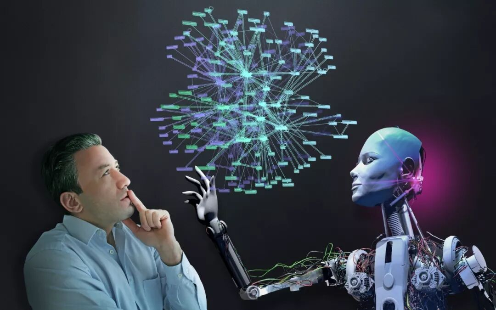
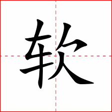
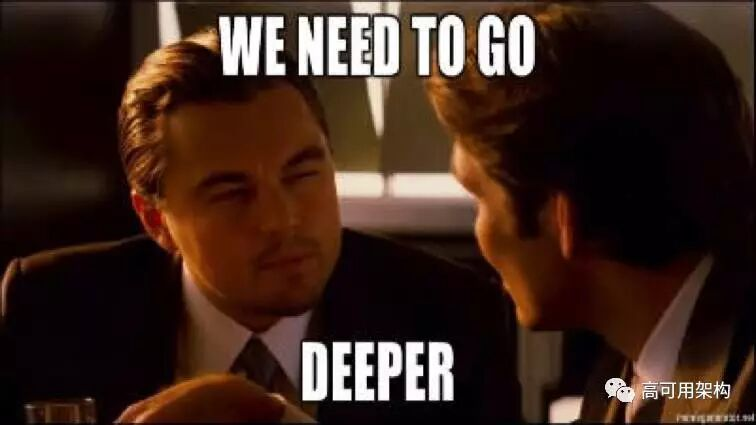
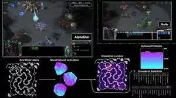
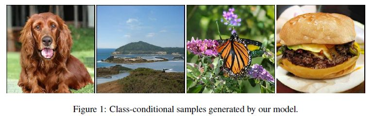
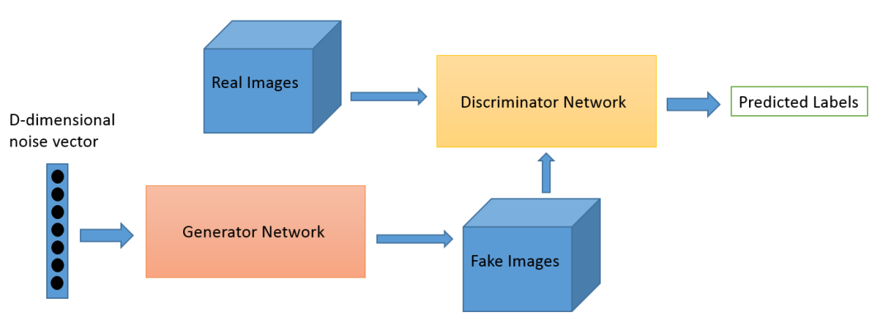
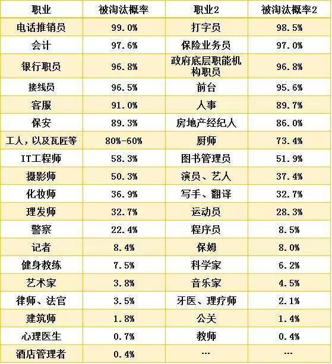

--------点击蓝字关注我--------
--------点击蓝字关注我--------

这篇文章是最近有一位读者想让我写写的几个问题中的一个。本来想一篇文章把所有的问题都回答了，没想到第一个问题就实在太大了，写了整整一篇。希望可以尽量用通俗的语言把我脑子里的东西讲清楚。
当然啦，要是读者有别的问题，也欢迎向我提问。
问：
AI与人共存的世界是什么样子的，现在AI到底能做到啥？
答：
我试着不简短地回答一下（本来想简短的，越写越长）。
1. 首先回答AI到底不能做什么。
一切智能（包括人的智能），都可以抽象成一个x->y的函数。
当然这个x->y的函数可以是高度随机的，比如我们在发呆的时候脑子里胡乱冒出的想法，可以认为x是空，y是对应的冒出来的想法。
而现在的人工智能的这个x->y的函数，要么是基于写死的一条一条的规则的，要么是基于由一定量的数据训练出的统计模型的，因此会有很多不能做的事情。
现在的人工智能所不能做到的，我觉得主要是把世界上的各种事物抽象成一种概念，并且给概念之间建立某种逻辑关系的能力。在这个能力的加持下，人类得以做到很多目前人工智能难以做到的事情。
比如说，小孩子第一次见到一只猫。下次再见到猫的时候，就算这只猫长得跟上一只猫不太一样，也能很容易地识别出这是一只猫。
这是因为人的智能把“猫”这个概念抽象了出来，并且赋予了这个概念一些性质，把满足这些性质的东西称为“猫”。所以只要见到一次猫，人今后就都能认出猫来。
而人工智能则无法做到见到一次猫，就能识别出所有的猫。以目前在图像识别方面最常用的模型为例，它需要我们输入大量的猫相关的图片，才能最终做到识别图片中的猫。
这是因为人工智能的做法是用一个统计模型来总结“猫”这种图像的数据特征，既然是总结，必然需要大量的样本。人工智能无法做到的，是针对一个物体，通过与这个物体的所有互动，提炼出这个物体的所有特征，并把这些特征与所有相对应的特征做出对应。
那么人工智能能不能像人一样去学习新的概念呢？
比如说，人工智能完全可以像一个人一样，通过摄像头看到了猫，通过机械臂的传感器与之互动，通过声音的传感器录下了猫的声音。但是就算它像一个人一样记录下所有的这些信息，它也很难把猫的种种特征，比如说皮肤软，有毛发，有耳朵，有四只脚，与对应的“皮肤”，“软”，“毛发”，“四”等概念联系起来。
要知道，要使得人工智能可以建立这些概念之间的联系，我们首先需要在人工智能的存储空间中用某些通用的方式记录下这些概念，从而当某些条件被满足的时候，这些概念会被激活。
人脑中就有这样的一种通用的记录概念的方式。比如说“软”这个概念，指的是某一个物体受到外力的时候，比较容易形变。虽然我在用文字描述我心中的有关“软”这个概念的意思，实际上“软”这个概念在我的头脑中是一种所谓的“心语”的方式存储的。虽然我无法很好地表达出“软”这个概念，比如说它跟“松”这个概念的区别，但是当我在调用这个概念回答一系列问题的时候，我的大脑可以很轻松地使用这个概念回答一系列的问题，比如“桌子不是软的”，“太阳很难说是软的还是硬的”等等。

你能想象这样一种数据结构，可以以一种通用的方式，存储“软”这个概念，以及它相关的一系列的特性以及适用范围吗？不仅如此，它还可以以完全一样的通用的方式，存储别的完全不相关的不同类型的概念。
我个人是有点难以想象的这样一种通用的数据结构的。我知道有一些前沿的研究一直在做这方面的工作，不过对于一些抽象的概念，比如“神”，“物质”，“存在”，真的是很难用某些表达方式来表达。
不仅如此，当一个婴儿在探索这个世界，学习什么东西是“软”的时候，他可能还不理解抽象意义上的“物体”，“外力”， “时候”等概念的含义。也就是说，可能我们在存储一些概念并且建立概念之间的联系的时候，可能很多的解释这些概念的概念还没有被存储下来。
总之，目前我们还难以找到一种通用的存储概念的方法，可以存储这个世界上所有的出现过的以及未曾出现过的概念。没有了这个做基础，人能做的很多事情，比如归纳总结，逻辑推演等等事情，人工智能根本无从谈起。
2. 其次回答AI到底能做什么，怎么做的
目前市面上主流的AI，基于的原理只有两种，一种是基于规则判断的AI，一种是基于某种统计模型的所谓机器学习的AI。
基于规则判断的AI很好理解，就是你给我A，我就给你B。从最简单的计算器，一直到击败了国际象棋冠军的深蓝，其实都可以算入这一类AI。
深蓝本质上基于的是暴力穷举的算法。这种算法简单来说，就是根据一个棋局，列出一系列可能的走法，然后根据不同的走法得出的新的棋局，继续进一步算出这些棋局相应的可能的走法，就这样不断算下去，得到最终得到所有可能的终局，基于此选择最佳的那种走法。

当然这种穷举非常耗费计算资源，所以会有各种优化来减少计算量，比如提前筛选掉某些可能的走法，以及基于一些规则直接对某些棋局打分。
基于规则判断的AI其实已经可以解决很多看似非常智能的问题了，甚至很多的机器人控制以及自动驾驶都是基于大量的规则判断，而不是一些统计模型。这主要是因为基于规则判断的AI非常的安全可靠，工程师可以100%地控制AI的行为。这在自动驾驶等领域非常重要。
总之，只要问题的复杂度在一定范围内，基于规则的AI都能解决。当然前提是x->y中，我们的输入x的复杂度不能太高。而且基于规则的AI需要耗费大量的开发人员的精力，有点像是人用自己的智能把规则提炼出来，然后把规则规定在代码里，而不是人工智能自己找到一个方法从真实问题中提炼规则。
虽说基于规则判断的AI已经很有用了，它的缺点也是很明显的，就是随着输入的复杂度的增加，它所需要的规则也相应地迅速增加。比如说如果我们要做图像识别，我们当然可以根据一些规则，给每一种可能的图片进行分类。但是由于图片的可能性实在是太多了（随着像素的数量呈指数增长），要给每一种可能的图片给出一个分类，所需要的规则也呈指数增长。
在这样一类复杂度较高的问题上，基于某种统计模型的AI就体现出优势了。我们一般把这种AI叫做基于机器学习的AI，而在统计系中一般把这种AI叫做模式识别，其原理本质也就是通过识别某些数据的模式来解决问题。
为什么统计模型会比规则在这类问题上更有优势呢？
因为当我们使用统计模型的时候，我们并不需要自己去根据某一个问题，一条一条地编写相应的规则，来解决这一个特定的问题。我们更多的时候是把这个问题当做一个函数，输入x，得到y，然后采集大量的x，y的数据对，然后用统计模型学习这些数据对内在的统计规律。这样的做法有一个特别大的好处，就是是我的数据越多，我的模型就可能越好，我的模型内部的一条条地规则被自动地“编写”在模型里面了。
一旦统计模型学会这些数据内在的统计规律以后，我们就得到了针对此类问题的一个x->y的函数。今后遇到类似的问题，我们就可以给它x，让模型给我对应的y。
这个x->y的函数非常的有用。目前人工智能中被广泛应用到的图像识别，机器翻译，语音识别，推荐系统，其实都可以被抽象成这样一个x->y的函数。
对于图像识别来说，x就是输入的图像，y就是这个图像属于哪一类。
对于机器翻译来说，x就是被翻译的语言，y就是被翻译成的语言。
对于语音识别来说，x就是输入的声音信号，y就是声音对应的文本。
对于推荐系统来说，x就是输入的内容（比如淘宝上的一个商品对应的所有信息），y就是针对某一个用户来说，如果我们想达到某个目标（比如让这个用户尽可能多花钱），这条内容的评分。
虽说这个x->y 的函数完全可以基于规则来做，但是用大量数据训练出来的统计模型往往效果远比基于规则的AI要好得多。总之，基于机器学习的AI相比起基于规则的AI，主要的好处就是不用手工提炼规则，而是用数据学规则。
而所谓的基于深度学习的AI，只不过是统计模型中的一种叫多层神经网络的统计模型。之所以它被如此广泛的应用，是因为它的模型的很“深”。
什么意思呢？比如说有的统计模型，你给它100条数据做训练，效果就到顶了，再多给效果也不会增加了。有的统计模型，你给它100万条数据，它的效果还没到顶，还可以继续增加。深度学习的这种多层神经网络，随着层数的增加，模型的“深”度会越来越深，所以最终可能达到的效果也就会越来越好。

那么Deepmind出的那些类似于AlphaGo，AlphaStar这些击败了人类的围棋，星际AI难道也是基于这样一个x->y的函数吗？
比如在AlphaGo中，x->y的函数是整个AI的一个重要的组成部分。在深蓝AI的介绍中，我们曾经解释过它的原理：暴力穷举。不过在围棋中，我们每一步能选择的下法更多，因此更加不可能穷举到终局，算出哪个下法最优。那怎么办呢？我们可以依然像深蓝中一样，列举出所有可能的下法，以及它们对应的局势以及下一步的下法，只不过几步以后，我们直接把每一种可能得到的棋局作为x，输入到一个x->y的函数里，得到对应的胜率y。这样估计完所有的棋局以后，我们直接选择胜率最高的棋局对应的下法就好了。
那么这里训练这个x->y的数据从哪里来呢？一方面，早期的AlphaGo用到了大量的人类棋局的数据，另一方面，AlphaGo中大量地采用自己跟自己玩的方式来获得训练数据。不过跟之前的训练数据所不同的是，不管是人类棋局的数据，还是让机器自己跟自己玩的过程中，我们的数据都是最终的赢或者输的结果，而不是每一步的胜率。那么要怎么用这种最终的输赢数据来训练这样一个对每一步都做判断的函数呢？这里需要用到一个强化学习中的一些经典方法，把最终的输赢结果作为奖励值，分配到整个棋局中每一步的下子中，来修正每一步下子中对胜率做判断的这个函数。
类似的，在星际的AI训练中，他们也采取了类似的方法。最终得到的AI中，会有一个x->y的函数，把当前的游戏画面以及过去好多游戏画面的一个压缩作为x, 当前的操作作为y输出。

总之，这样一个x->y的函数，在总结了大量的数据以后（或者没有大量数据的情况下，通过与环境互动产生大量的数据），可以发挥极其强大的威力，甚至在很多情况下击败人类。这时候AI的强大的本质，还是因为它比人的总结能力强太多了。
可能你还听说过AI可以谱曲，画画，写新闻稿等等。那些的原理也是这样一个x->y的函数吗？
那些东西的本质其实还是统计模型，只不过是把两个统计模型做了一个对抗，一般业界叫做GAN。

GAN生成的超清图片

在GAN中，第一个统计模型是一个x->y的函数，这里的x是一个随机的噪声，而y是一段曲子，画，一段文字等等东西。当然一开始这个函数只能把随机的噪声x变成一些完全没有意义的曲子，画，文字等等东西。
第二个统计模型是另一个x->y的函数，这里的x是一段曲子，画，一段文字等等东西，y是一个判断这个东西是真的还是生产出来的东西真假值。
我们把第一个统计模型生成的东西跟很多真实世界中的样本（一段曲子，画，一段文字）并联起来，有的时候从真的样本中取，有的时候从第一个统计模型那边取。然后让第二个统计模型接在这两个并联的数据源的出口，来判断哪个数据是来自真的数据源，哪个是来自第一个统计模型的生成值。
然后我们用这些数据对这两个统计模型用某些方法进行训练。对于第一个统计模型来说，它的目标是骗过第二个统计模型，对于第二个统计模型来说，它的目标是分辨出数据的真假。训练完后，由于第一个统计模型骗人的功力越来越好了，它就学会了生成跟真实数据非常类似的数据。于是我们就可以用它来生成新的，类似于真实数据的数据（一段曲子，画，一段文字）了。
总之，用这样的方式，我们可以得到这样一个x->y的统计模型。这个统计模型可以用一些随机的信号x，生成类似于某个数据集中的数据y。本质上来说，这个统计模型把握住了这个数据集里数据的特征，因此可以自己生成类似的数据。不过，它只能生成与过去的数据类似的数据，而且这个生成的过程并没有逻辑推理的痕迹。
3. 最后回答AI与人共存的世界是什么样子
其实AI已经与人共存了好几十年了。不管是基于规则的AI，还是基于机器学习的AI，其实已经在人类社会中发挥了非常重要的作用了。从图像识别导致的各种安监系统，到电商平台的各种推荐系统，其实都是基于规则或者机器学习的AI。
我相信，类似这样的AI肯定会在我们的生活中继续普及下去，直至把类似的工作全部取代。驾驶员，收营员，低端的会计工作，低端的填色p图工作，最终会全部被AI所替代。
到那时，AI与人共存的世界将是一个高度自动化的世界。几乎所有可被总结出规则，可被自动化的东西都被自动化了。人们的工作也会更多地往那些无法被自动化的事情上去倾斜，比如说作家，艺术家，程序员，管理人员，医生，护理人员等等。在这些工作中，可能大量的可重复性工作会被自动化，不过那些需要抽象概念，建立概念之间关系的工作，绝不会被替代。

一张随便找的不那么准确的表单，大致看个意思
至于可以真正的从世界中提取，总结概念，从而实现自主学习的AI，在可见的未来的10-20年内，即使在最前沿的科研领域也还没有半点影子。所以我觉得暂时还没有担心的必要。真正可以自主学习的AI应该跟我们目前火热的机器学习从原理上非常地不一样。除非出现好几个重大的技术突破，我觉得甚至在我的有生之年，我都不一定能见到它的出现。
还有一个大的可能发展是脑机接口的大发展。到那个时候，人跟机器间的输入输出的传输速率可能会比现有的方案快上好多，带来我们目前完全想象不到的改变。说不定到时候人类会与机器成为更加紧密的共生体。具体的可以点击原文，查看waitbutwhy的一篇相关的文章。我在这边就不赘述了。